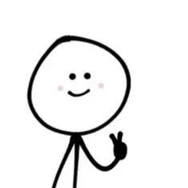
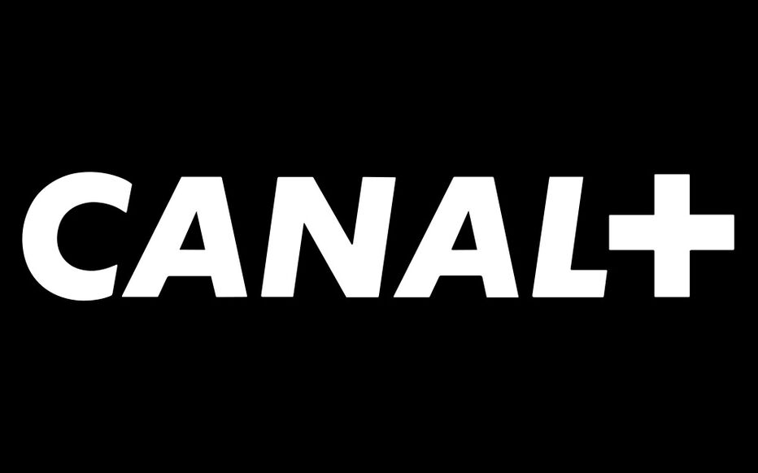
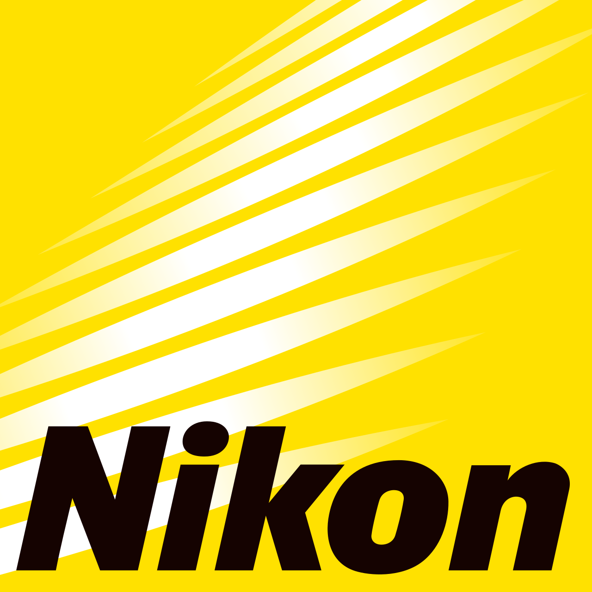

Télérama
★★★★☆
« Un film sous tension, aussi vertigineux que spectaculaire. »
Déterminé à atteindre un objectif qui semble impossible, un jeune aventurier se lance dans une expédition au cœur des montagnes. Face au vide, au froid et à un environnement imprévisible, il repousse peu à peu ses propres limites, quitte à mettre sa propre vie en danger. Cependant, plus il se rapproche de son but, plus chaque décision devient risquée. one prise raconte une quête intense où l’ambition, l’adrénaline et l’instinct de survie se confrontent dans un décor aussi spectaculaire que dangereux.

Aventurier et vidéaste de 24 ans, passionné par la montagne et les sensations fortes depuis son adolescence, Noah vit avec une obsession : aller toujours plus loin que la fois précédente. Déterminé, impulsif et parfois inconscient, il transforme chacun de ses défis en images, avec l’envie de réaliser la prise parfaite. Derrière son assurance se cache pourtant une peur profonde de l’échec. Pour réussir son nouveau projet, Noah décide de s’attaquer seul à une ascension particulièrement dangereuse. Mais à mesure qu’il gagne en altitude, la frontière entre dépassement de soi et mise en danger devient de plus en plus fine.

Avec Julien Morel, Emma Vasseur, Lucas Bernard, Clara Martin
« Un film sous tension, aussi vertigineux que spectaculaire. »
« Une expérience immersive qui nous donne le vertige jusqu’à la dernière seconde. »
« Intense, brut et saisissant : une aventure qui se vit autant qu’elle se regarde. »

